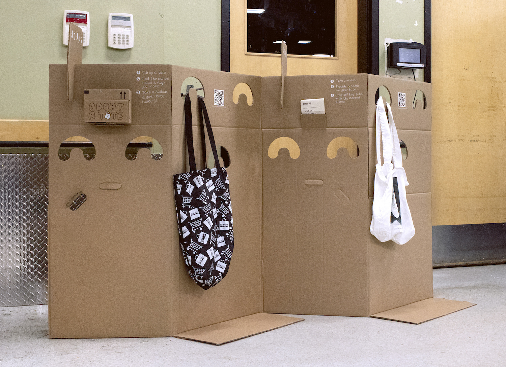
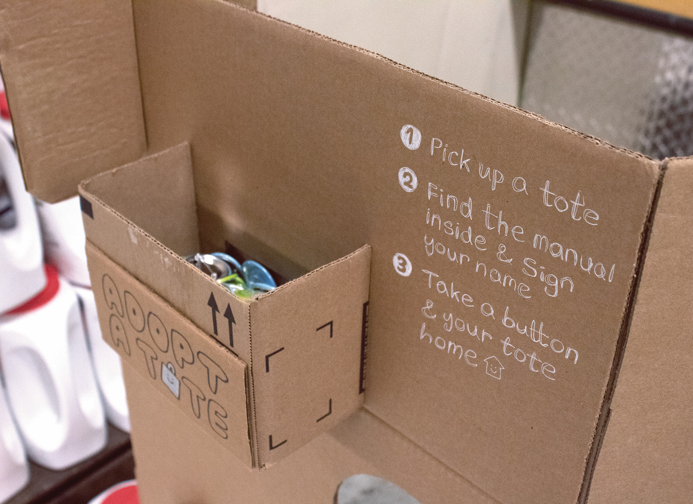
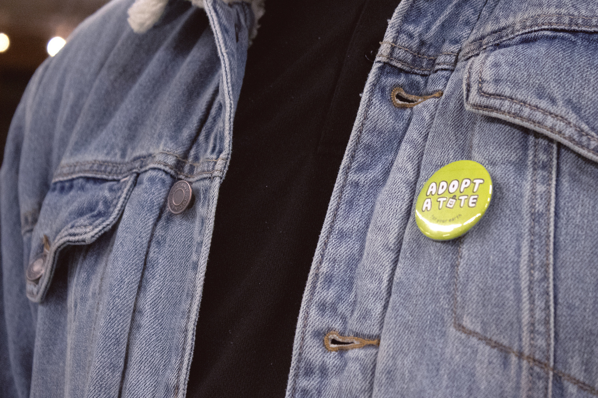
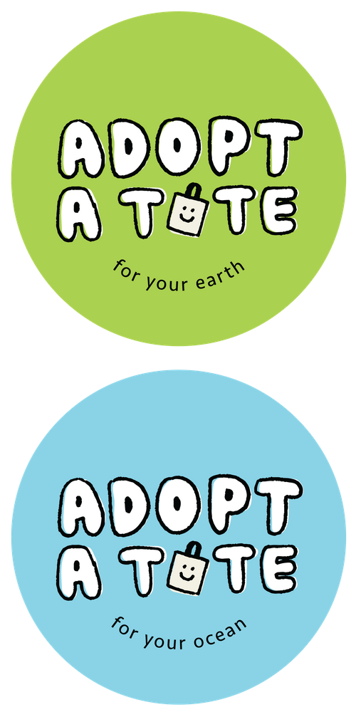
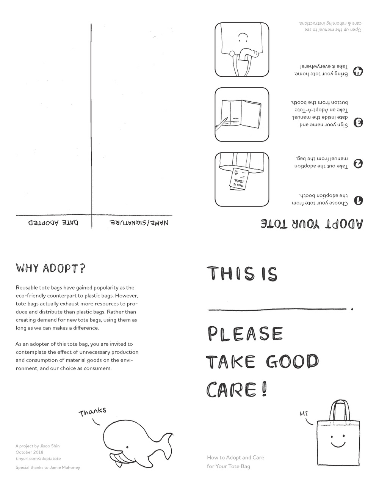
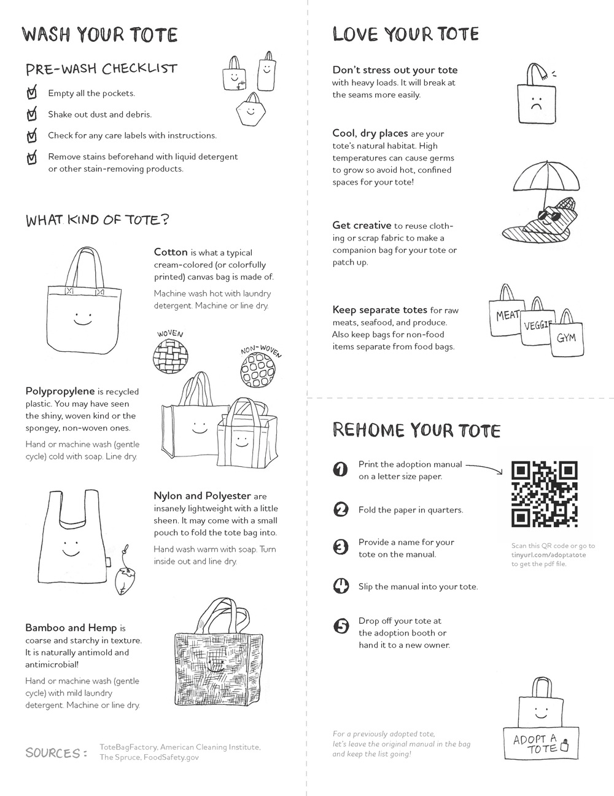
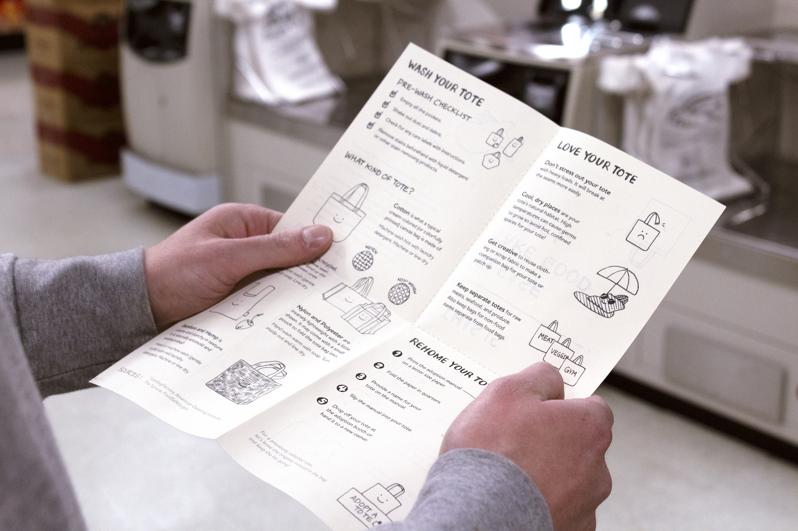
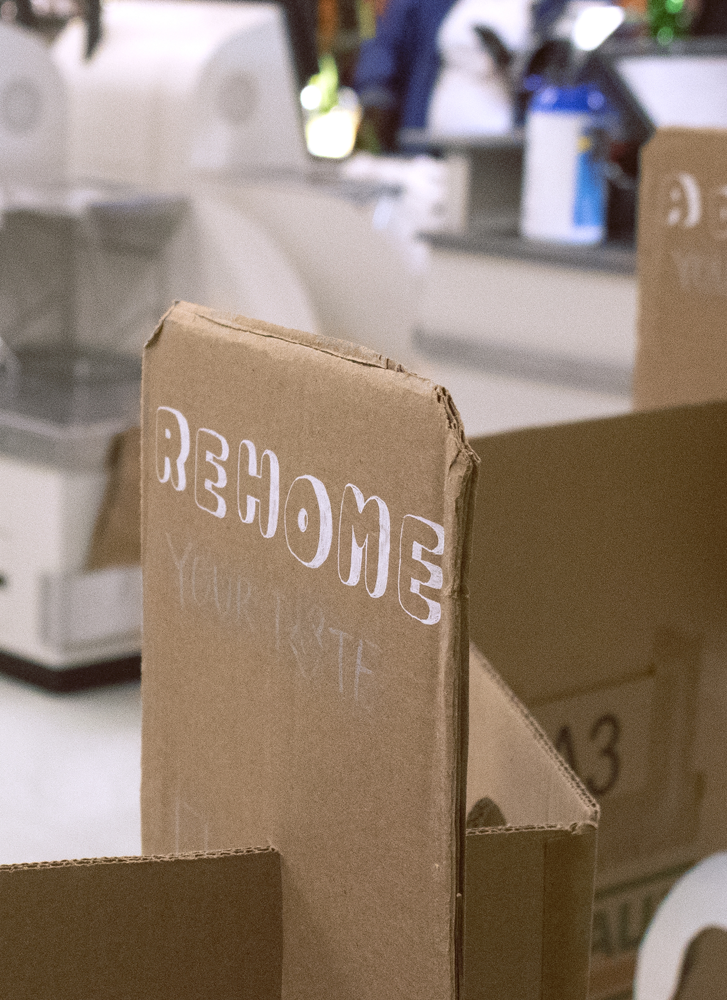

Shoppers may drop off ("rehome") their tote bags by providing a name for the tote on the manual and putting the manual inside the bag for the next shopper.
The next shopper who wants to adopt a tote can then sign their name and date inside the manual (much like a library card) and take the tote home.



Friendly hand-drawings and hand-written components encourage people of all ages to participate in the effort to make the planet a little greener.



The foldable manual instructs on how to use the kiosk and take care of the tote bags. More resources and downloadble pdf of the manual can be found in this shared drive.

Many thanks to Farm Fresh for graciously letting me use their space for the photoshoot.